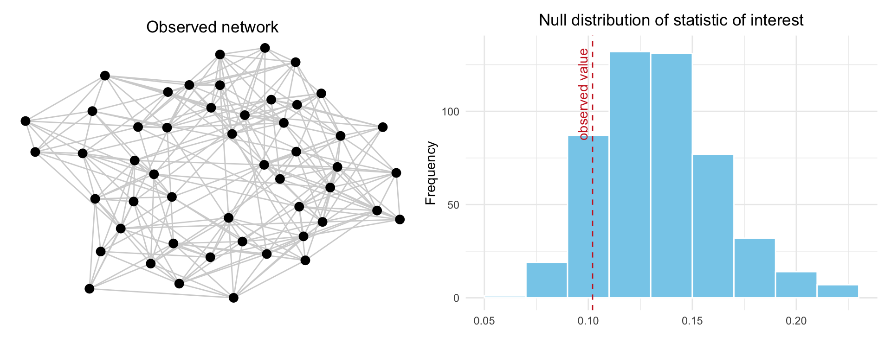
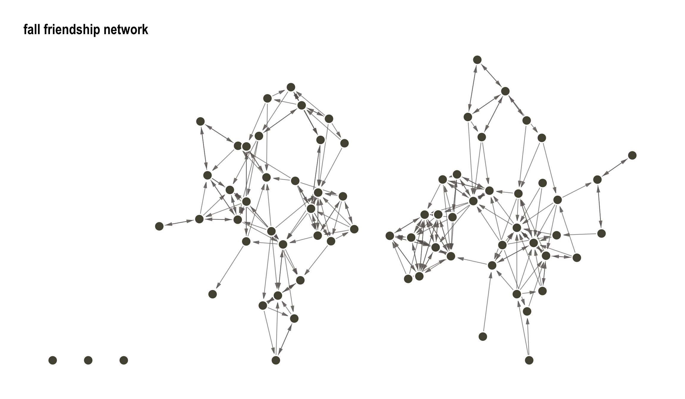
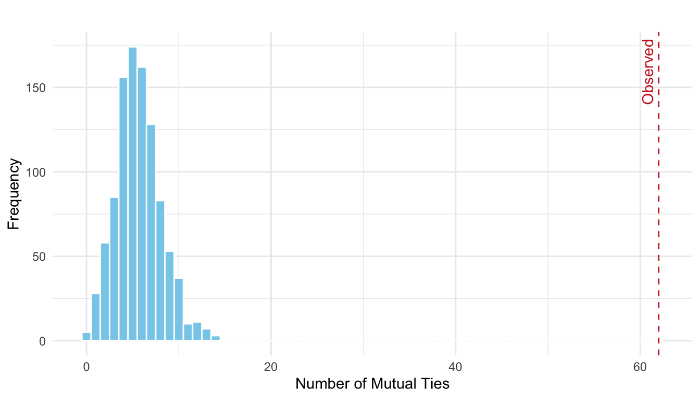
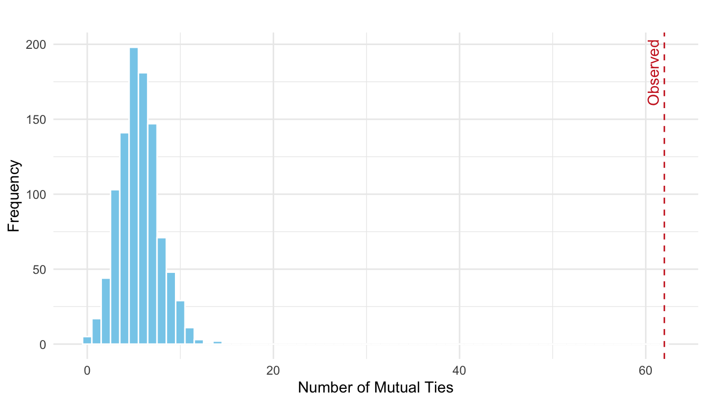
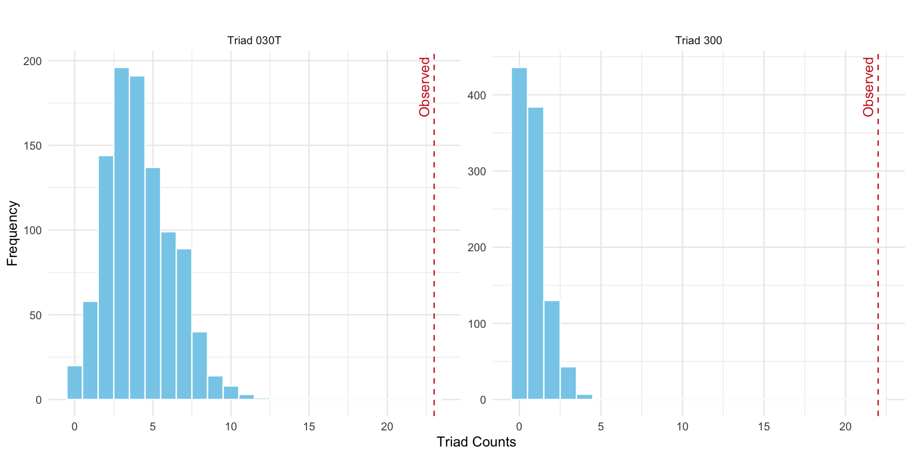
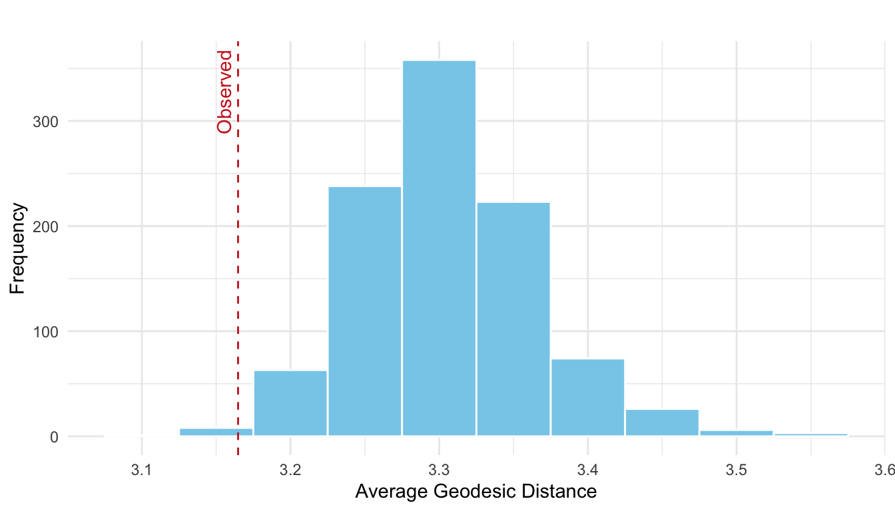
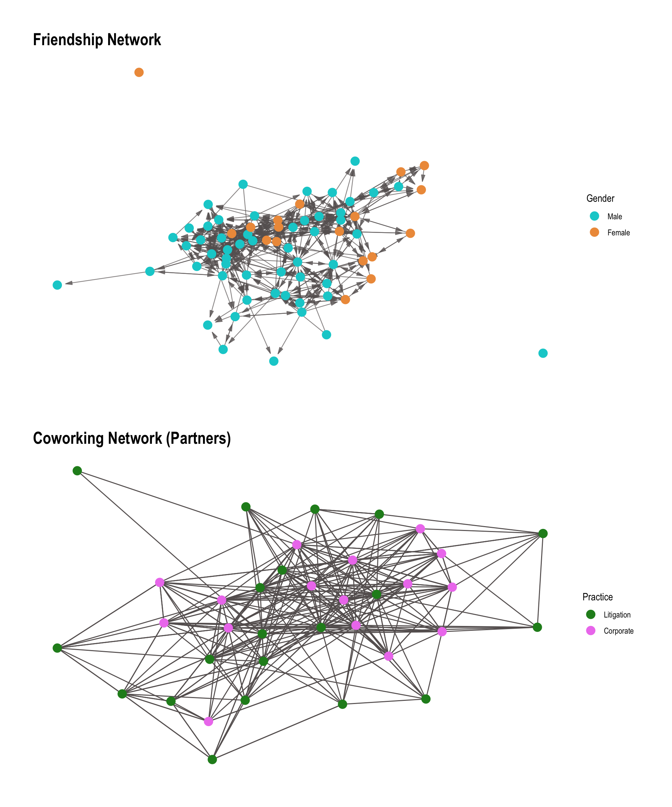
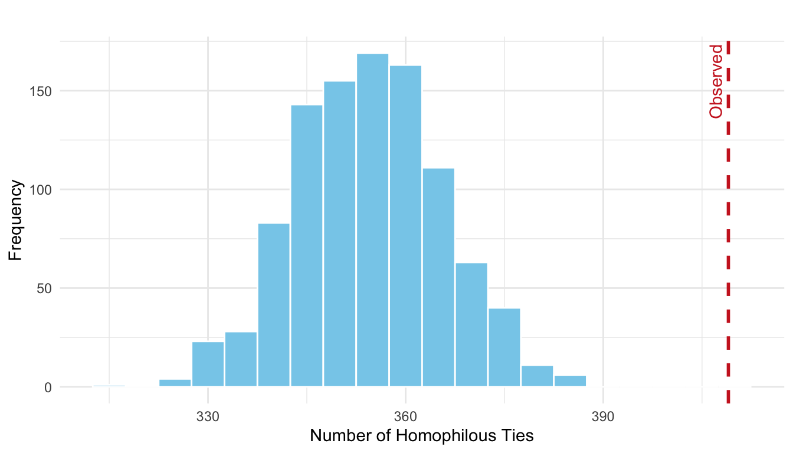
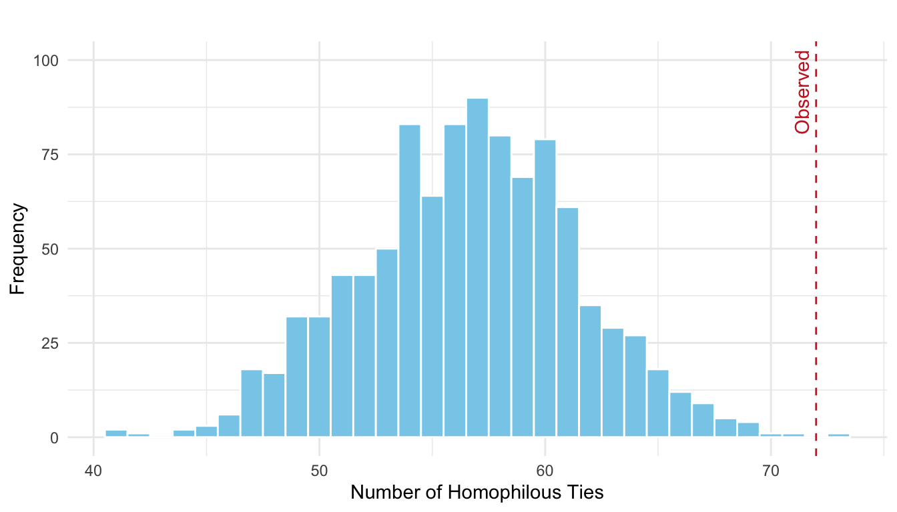

library(statnet) Installed ReposVer Built
degreenet "1.3-6" "1.3-7" "4.5.0"library(igraph)
library(ggraph)
library(graphlayouts)
library(patchwork)
library(networkdata)
library(tidyverse)A common non-parametric technique is permutation testing, where the observed network is systematically altered, typically by shuffling ties while preserving certain properties such as the number of connections each node has. This process creates a reference distribution under the null hypothesis, allowing researchers to assess whether observed patterns (like high clustering or assortativity) are statistically significant or could have arisen by chance.
Importantly, in non-parametric frameworks, \(p\)-values retain their traditional interpretation. They represent the probability of observing network features as extreme as those found in the data if the null hypothesis were true. This familiar statistical grounding makes non-parametric tests both intuitive and flexible.
Non-parametric methods are particularly valuable during the exploratory phase of research, for validating parametric models, and in contexts where theoretical models are either undeveloped or poorly understood.
library(statnet) Installed ReposVer Built
degreenet "1.3-6" "1.3-7" "4.5.0"library(igraph)
library(ggraph)
library(graphlayouts)
library(patchwork)
library(networkdata)
library(tidyverse)One widely used non-parametric approach is the Conditional Uniform Graph Distribution (CUG). CUGs define a reference distribution of graphs generated uniformly at random, but conditioned on one or more fixed characteristics of the observed network, such as the number of nodes, total number of edges, or degree distribution. By preserving these basic structural features, CUGs enable researchers to assess whether a more complex pattern (e.g., high reciprocity, homophily, or transitivity) is likely to have arisen by chance given the observed constraints.
Why do we do this? Well, in network analysis, statistical inference relies on some form of randomness; we assume that if a structure emerges more often than we would expect under random conditions, it likely reflects an underlying social mechanism. A CUG distribution formalizes this by defining a uniform distribution over a set of graphs, where each graph satisfies a fixed constraint, such as the same number of edges, node degrees, or dyadic relationships. Throughout this chapter, a dyad is denoted by \((i,j)\); for directed networks, \((i,j)\) and \((j,i)\) are distinct, while for undirected networks we use \(i<j\) to count each dyad once.
For example, if a network displays unusually high clustering, a CUG test can evaluate whether this is statistically exceptional or simply a byproduct of the network’s size and density. By comparing the observed statistic to the distribution of values from randomly generated but structurally constrained networks, researchers can determine the significance of the observed pattern. CUGs are especially useful when a full parametric model is unavailable, difficult to specify, or when the goal is to control for known network features while testing specific structural hypotheses.
Several types of CUGs can be defined:
For example, in a CUG with fixed density (number of edges), each graph that meets the constraint is equally probable. Graphs that do not satisfy the constraint (e.g., different number of ties) are assigned a probability of zero. This results in a null model that is tightly defined and suitable for hypothesis testing.
The process follows classical null hypothesis testing logic:
To test \(H_0\) we follow the below steps:
If the observed value lies in the extreme tails (e.g., below the 2.5th percentile or above the 97.5th), we reject \(H_{0}\) at the corresponding 5% significance level, concluding that the observed structure likely reflects a genuine social mechanism rather than random chance. Since the tests are actually non-parametric (Monte Carlo) tests, we can estimate the \(p\)-value as the proportion of simulated test statistics that are as extreme or more extreme than the observed value. This provides a data-driven way to assess whether the observed statistic is likely under the null model, allowing for hypothesis testing without strong distributional assumptions.
The process is visualized in Figure 16.1 where the left panel shows the observed network, while the right panel displays the null distribution of the statistic based on 500 randomly generated graphs that preserve the same number of nodes and edges. The dashed red line indicates the observed value. If this value lies in the tail of the distribution, it suggests the observed structure is unlikely to have arisen by chance under the null model.

We will use a running example, namely Coleman (Coleman 1964) which is available as graph object in the networkdata package and as an array in statnet (or more specifically sna). We will use these interchangeably depending on the function and package used for our analysis. The data consists of self-reported friendship ties among 73 boys in a small high school in Illinois over the 1957-1958 academic year. Networks of reported ties for all 73 informants are provided for two time points (fall and spring). We will only focus on the fall network here, which we load and visualize.
data("coleman")
coleman_g <- coleman[[1]]
ggraph(coleman_g, layout = "stress") +
geom_edge_link(
edge_color = "#666060",
end_cap = circle(9, "pt"),
n = 2,
edge_width = 0.4,
edge_alpha = 0.7,
arrow = arrow(
angle = 15,
length = unit(0.1, "inches"),
ends = "last",
type = "closed"
)
) +
geom_node_point(
fill = "#525240",
color = "#FFFFFF",
size = 5,
stroke = 1.1,
shape = 21
) +
theme_graph() +
ggtitle("fall friendship network") +
theme(legend.position = "none")
Here, we simulate graph distributions while keeping the expected frequency from the observed network fixed. We aim to answer the following question: do we observe significantly more reciprocal ties in our observed network than what is expected by pure chance given random networks of the same expected density? So the statistic of interest here is the number of reciprocal ties, which we obtain from the dyad census.
dyad_census(coleman_g)$mut
[1] 62
$asym
[1] 119
$null
[1] 2447sum(which_mutual(coleman_g)) / 2[1] 62The number of reciprocal ties is equal to 62. In order to compute this density, we can use the igraph function edge_density().
density_obs <- edge_density(coleman_g)Further we save number of nodes and edges of the observed network.
n_nodes <- vcount(coleman_g)To simulate the null distribution we use the function igraph from the sample_gnp package. We simulate 1000 random networks with the parameters specified above.
# Simulate 1000 random graphs with same density
set.seed(1108)
sim_g_dens <- replicate(
1000,
{
sample_gnp(
n = n_nodes,
p = density_obs,
directed = TRUE,
loops = FALSE
)
},
simplify = FALSE
)Note that the output consists of 1000 randomly generated networks as graph objects. While each individual simulated network may not contain exactly the same number of edges as the observed network, they are stochastically equivalent in terms of overall density.
We then compute the number of reciprocal (mutual) ties in each simulated network and visualize the resulting distribution under the null model of random tie allocation in Figure 16.2. A red dashed line is included in the plot to indicate the number of mutual ties observed in the actual network (62), highlighting how it compares to the distribution expected by chance.
# Define mutual tie counter
count_mutual <- function(g) {
sum(which_mutual(g)) / 2
}
# Apply to all simulated igraph objects
mutual_counts <- sapply(sim_g_dens, count_mutual)
# Create data frame
mutual_df <- data.frame(mutual_ties = mutual_counts)
# Plot
ggplot(mutual_df, aes(x = mutual_ties)) +
geom_histogram(binwidth = 1, fill = "skyblue", color = "white") +
geom_vline(
xintercept = dyad_census(coleman_g)$mut,
color = "firebrick3",
linetype = "dashed"
) +
annotate(
"text",
x = dyad_census(coleman_g)$mut,
y = Inf,
label = "Observed",
vjust = -0.5,
hjust = 1.1,
color = "firebrick3",
angle = 90
) +
labs(title = " ", x = "Number of Mutual Ties", y = "Frequency") +
theme_minimal()
As shown in the plot, the observed number of mutual ties falls far in the right tail of the distribution. This indicates a substantial deviation from what would be expected under random tie formation. This can be interpreted as follows:
If ties in the network were allocated completely at random, while preserving the overall density, it would be highly unlikely to observe as many reciprocal ties as we do in the actual network.
Stated more formally, this analysis serves as a test of the following null hypothesis:
\(H_0\): The number of mutual ties in the observed network does not differ from what would be expected under random tie formation, given the observed network density.
\(H_1\): The observed number of mutual ties is significantly greater than expected by chance, indicating a tendency toward reciprocity beyond what density alone would predict.
Since the observed number of mutual ties falls far in the right tail of the simulated distribution, we see a clear and substantial deviation from the null model. Therefore, we reject the null hypothesis, concluding that the observed network exhibits significantly more reciprocity than would be expected by random chance alone. This indicates a strong tendency for mutual connections in the network that is not explained by density alone.
In order to compute the \(p\)-value, we compare the observed value to the distribution from the simulated null model.
# Empirical p-value (proportion of simulated mutual counts >= observed)
p_value <- mean(mutual_counts >= dyad_census(coleman_g)$mut)
p_value[1] 0Unsurprisingly, this value is equal to zero, as we do not have any part of the distribution ranging over the observed count. However, \(p\)-values from Monte Carlo tests are never exactly 0, but rather “less than 1 / number of simulations”, so a more correct statement would be that
\(p\) < 0.001 (based on 1000 simulations) providing very strong evidence against the null hypothesis.
The rgraph() function from the sna (or statnet) package can also be used to simulate random networks with a specified expected density. However, note that its output consists of adjacency matrices (as a 3D array or list), rather than igraph objects. This requires additional conversion before applying igraph-based analyses.
In this section, we perform the same test but condition the random networks generated on the exact number of edges. So out null world is now stated as
\(H_0\): The number of mutual ties in the observed network is consistent with what would be expected under random edge assignment, given a fixed number of nodes and edges.
To simulate this null distribution under this new constraint, we generate 1000 random networks using the sample_gnm() function from the igraph package, which samples graphs with a fixed number of edges.
set.seed(1108)
# Parameters from the observed network
n_nodes <- vcount(coleman_g)
n_edges <- ecount(coleman_g)
# Simulate 1000 random directed graphs with fixed number of edges
sim_g_edges <- replicate(
1000,
{
g <- sample_gnm(
n = n_nodes,
m = n_edges,
directed = TRUE,
loops = FALSE
)
},
simplify = FALSE
)Note that each simulated network has exactly the same number of edges as the observed network, ensuring that any difference in mutual ties arises from the pattern of connections, not their quantity. We then compute the number of mutual ties in each simulated network and visualize the distribution, shown in Figure 16.3.
# Define mutual tie counting function
count_mutual <- function(g) {
sum(which_mutual(g)) / 2
}
# Apply to all simulated graphs
mutual_counts_edges <- sapply(sim_g_edges, count_mutual)
# Plot the distribution
mutual_df_edges <- data.frame(mutual_ties = mutual_counts_edges)
ggplot(mutual_df_edges, aes(x = mutual_ties)) +
geom_histogram(binwidth = 1, fill = "skyblue", color = "white") +
geom_vline(
xintercept = dyad_census(coleman_g)$mut,
color = "firebrick3",
linetype = "dashed"
) +
annotate(
"text",
x = dyad_census(coleman_g)$mut,
y = Inf,
label = "Observed",
vjust = -0.5,
hjust = 1.1,
color = "firebrick3",
angle = 90
) +
labs(title = " ", x = "Number of Mutual Ties", y = "Frequency") +
theme_minimal()
The results are very similar to earlier; the observed number of mutual ties lies in the extreme right tail of the simulated distribution. This suggests a strong deviation from what would be expected under the null model of randomly assigned edges with no structural bias toward reciprocity.
The rgnm() function from the sna (or statnet) package can also be used to simulate random networks with a specified expected density. However, note again that its output consists of adjacency matrices (as a 3D array or list).
Given the results above where we tested for reciprocity using CUG null models that preserved either network density or the total number of edges, we now move to a more constrained and informative baseline: null models conditioned on dyadic structure. Specifically, we consider CUG tests based on the dyad census, which preserve the number of mutual, asymmetric, and null dyads observed in the original network. This means that the basic dyadic processes, such as the overall tendency toward reciprocity, are held constant in the simulated networks.
Because mutual ties are fixed across all networks under this null model, the number of reciprocal ties can no longer be used as a test statistic (it will be identical in every simulation). As a result, we shift our focus to higher-order structural properties that emerge from patterns of connected dyads. One such property is transitivity (or triadic closure), which captures the tendency for actors who share a common partner to also be directly connected.
By conditioning on the dyad census and evaluating statistics like transitivity, we can assess whether the observed network exhibits more complex structural organization than would be expected by chance, even after accounting for baseline dyadic tendencies.
Our null hypothesis is now defined as:
\(H_0\): The number of complete triangles (transitive triads) observed in the network does not differ from what would be expected under random tie allocation, conditional on the observed dyadic processes (i.e., mutual, asymmetric, and null dyad frequencies).
Can we then say that there are more complete triangles than we expect by chance? Just how likely or unlikely is it to observe this many triangles? In order to answer this we again need to produce the world of hypothetical networks by simulation.
Since igraph does not currently provide a function to generate random graphs with a fixed dyad census, we make use of rguman() from the sna package, and then convert them to graph objects, and use igraph::triad_census() to compute the triad-level statistics.
In directed networks, there are two triad types corresponding to closed triads, 030T and 300.
set.seed(1108)
# Generate 1000 graphs with fixed dyad census using rguman (from sna)
sim_nets_man <- rguman(
n = 1000,
nv = n_nodes,
mut = dyad_census(coleman_g)$mut,
asym = dyad_census(coleman_g)$asym,
null = dyad_census(coleman_g)$null,
method = "exact"
)
# Convert to igraph objects
sim_g_man <- lapply(1:dim(sim_nets_man)[1], function(i) {
graph_from_adjacency_matrix(sim_nets_man[i, , ], mode = "directed")
})
# Get observed triad counts by index
obs_triad <- triad_census(coleman_g)
obs_030T <- obs_triad[9] # position of 030T
obs_300 <- obs_triad[16] # position of 300
# sim_graphs: list of igraph directed networks
sim_g_tc <- t(sapply(sim_g_man, triad_census))
sim_g_tc_df <- as.data.frame(sim_g_tc)
# Extract simulated triad counts
triad_df <- sim_g_tc_df |>
select(9, 16) |>
rename(`Triad 030T` = 1, `Triad 300` = 2) |>
pivot_longer(
cols = everything(),
names_to = "Triad_Type",
values_to = "Count"
)
# Create observed values for vertical lines
obs_df <- data.frame(
Triad_Type = c("Triad 030T", "Triad 300"),
Count = c(obs_030T, obs_300)
)Now we have everything set to plot out the results as before to test out hypothesis. The results are shown in Figure 16.4.
ggplot(triad_df, aes(x = Count)) +
geom_histogram(binwidth = 1, fill = "skyblue", color = "white") +
geom_vline(
data = obs_df,
aes(xintercept = Count),
color = "firebrick3",
linetype = "dashed"
) +
geom_text(
data = obs_df,
aes(x = Count, y = Inf, label = "Observed"),
angle = 90,
vjust = -0.5,
hjust = 1.1,
color = "firebrick3"
) +
facet_wrap(~Triad_Type, scales = "free") +
labs(title = " ", x = "Triad Counts", y = "Frequency") +
theme_minimal()
Is the average geodesic distance in the observed network significantly shorter (or longer) than would be expected in random networks with the same in- and out-degree sequence? To answer this we turn to uniform graph distribution given fixed degree. The null world corresponds now to the following:
\(H_0\): The average geodesic distance observed in the network is consistent with what would be expected under random graphs that preserve the in- and out-degree sequence.
This CUG test here evaluates whether the observed network is more (or less) efficiently connected than expected under degree-preserving randomization. The results are run and visualized below in Figure 16.5.
# Extract in-degree and out-degree from observed network
in_deg <- igraph::degree(coleman_g, mode = "in")
out_deg <- igraph::degree(coleman_g, mode = "out")
# Compute observed average geodesic distance (exclude disconnected pairs)
obs_dist <- mean_distance(
coleman_g,
directed = TRUE,
unconnected = TRUE
)
# Simulate 1000 graphs preserving degree sequence
set.seed(1108)
sim_deg_graphs <- replicate(
1000,
sample_degseq(
out.deg = out_deg,
in.deg = in_deg,
method = "fast.heur.simple"
),
simplify = FALSE
)
# Compute average geodesic distance for each simulation
sim_geodist <- sapply(sim_deg_graphs, function(g) {
mean_distance(g, directed = TRUE, unconnected = TRUE)
})
# Create data frame
geodist_df <- data.frame(avg_geodist = sim_geodist)
# Plot
ggplot(geodist_df, aes(x = avg_geodist)) +
geom_histogram(binwidth = 0.05, fill = "skyblue", color = "white") +
geom_vline(
xintercept = obs_dist,
color = "firebrick3",
linetype = "dashed"
) +
annotate(
"text",
x = obs_dist,
y = Inf,
label = "Observed",
angle = 90,
vjust = -0.5,
hjust = 1.1,
color = "firebrick3"
) +
labs(
title = " ",
x = "Average Geodesic Distance",
y = "Frequency"
) +
theme_minimal()
This indicates that the observed network is significantly more efficiently connected (in terms of shortest paths) than what would be expected under random edge arrangement, given the same degree distribution. In other words, the network’s structure enables actors to reach one another more quickly than random networks with the same node-level connectivity.
What’s the \(p\)-value? We compare the observed value to the distribution from the simulated null model.
# Empirical p-value (proportion of simulated mutual counts >= observed)
p_value <- mean(sim_geodist <= obs_dist)
p_value[1] 0.007Thus, we would reject the null. This example also highlights that you need to pay attention to which tail the observed value is located when computing the \(p\)-value (here left).
To illustrate how we can test for homophily using a non-parametric approach, we turn to another data set with available node attributes, namely the one by Lazega (2001). This data set comes from a network study of corporate law partnership that was carried out in a Northeastern US corporate law firm, referred to as SG&R, 1988-1991 in New England. It includes (among others) measurements of networks among the 71 attorneys (partners and associates) of this firm, i.e., their coworker network, advice network, friendship network, and indirect control networks. Various members’ attributes are also part of the dataset, including seniority, formal status, office in which they work, gender, lawschool attended.
Two tests will be performed:
These two networks that are used in the following are visualized in Figure 16.6.

First, we examine gender-based homophily in a friendship network among corporate lawyers from the Lazega dataset. We load the data as an igraph object from the package networkdata and vizualize it, with node color representing gender.
data("law_friends")
law_friends_g <- law_friendsWe are here testing the following
\(H_0\): The number of same-gender ties in the network is consistent with a random distribution of ties (given network size and density).
\(H_1\): The observed network has significantly more (or fewer) same-gender ties than expected by chance.
To answer this, we use a non-parametric test based on randomly generated networks that match the observed network in size and density. This is effectively a CUG test under the null model \(\mathcal{U} \mid L\), where ties are randomly distributed.
We start by converting the friendship network to an adjacency matrix and extracting the gender attribute from the nodes.
law_mat <- as.matrix(as_adjacency_matrix(
law_friends_g,
sparse = FALSE
))
law_nodes <- vcount(law_friends_g)
law_edges <- sum(law_mat)
law_gender <- V(law_friends_g)$genderThen, we compute the number of observed homophilous ties (same-gender friendships) in the observed network.
# 1 = male, 2 = female
homoph_obs <- sum(law_mat[law_gender == 1, law_gender == 1]) +
sum(law_mat[law_gender == 2, law_gender == 2])To generate networks from the null world, we simulate 1000 random directed graphs with the same number of nodes and edges as the observed network and then compute the number of homophilous ties in each simulated network (assuming the same ordering of gender assignments to nodes in each simulated network).
set.seed(1108)
law_sim_g <- replicate(
1000,
{
g <- sample_gnm(
n = law_nodes,
m = law_edges,
directed = TRUE,
loops = FALSE
)
as_adjacency_matrix(g, sparse = FALSE)
},
simplify = FALSE
)
homoph_sim <- sapply(law_sim_g, function(mat) {
sum(mat[law_gender == 1, law_gender == 1]) +
sum(mat[law_gender == 2, law_gender == 2])
})As before, we can create a histogram of the simulated homophilous tie counts and mark the observed value, as shown in Figure 16.7:
homoph_df <- data.frame(homophilous_ties = homoph_sim)
ggplot(homoph_df, aes(x = homophilous_ties)) +
geom_histogram(binwidth = 5, fill = "skyblue", color = "white") +
geom_vline(
xintercept = homoph_obs,
color = "firebrick3",
linetype = "dashed",
size = 1
) +
annotate(
"text",
x = homoph_obs,
y = Inf,
label = "Observed",
vjust = -0.5,
hjust = 1.1,
angle = 90,
color = "firebrick3"
) +
labs(
title = " ",
x = "Number of Homophilous Ties",
y = "Frequency"
) +
theme_minimal()
The empirical \(p\)-value is computed as
mean(homoph_sim >= homoph_obs)[1] 0which implies that we reject the null hypothesis, concluding that gender-based homophily exists in the friendship network.
Our second test is whether partners in the law firm are more likely to collaborate (cowork) with others who share the same practice area (litigation or corporate) than we would expect by chance. This is a test of homophily based on professional specialization.
We begin by loading the law_cowork network from the networkdata package.
data("law_cowork")
law_cw_g <- law_coworkWe restrict the analysis to the first 36 lawyers, corresponding to the partners of the firm (as indicated by their “status” attribute).
The following hypotheses can be stated:
\(H_0\): The number of same-practice coworking ties is consistent with a random distribution of ties, given number of ties and edges of the network.
\(H_1\): The observed number of same-practice ties is significantly greater than expected under random conditions; suggesting homophily based on professional specialization.
Since coworking is a reciprocal relationship, we treat the network as undirected by symmetrizing the adjacency matrix.
# Create an adjacency matrix
law_mat_cwdir <- as.matrix(as_adjacency_matrix(
law_cw_g,
sparse = FALSE
))
law_mat_cwdir <- law_mat_cwdir[1:36, 1:36]
# Symmetrize to create undirected matrix (co-ties must be mutual)
law_mat_cw <- (law_mat_cwdir == 1 & t(law_mat_cwdir) == 1) * 1
law_nodes_cw <- nrow(law_mat_cw)
law_ties_cw <- sum(law_mat_cw) / 2 # undirected: each tie counted twiceWe now extract the binary attribute practice for each partner and store it as a vector.
law_attr_pract <- V(law_cw_g)$practice[1:36]We define homophilous ties as coworking ties between two lawyers of the same practice area. We count both litigation–litigation and corporate–corporate ties.
homoph_obs_cw <- sum(
law_mat_cw[law_attr_pract == 1, law_attr_pract == 1]
) /
2 +
sum(law_mat_cw[law_attr_pract == 2, law_attr_pract == 2]) / 2To construct the null model, we generate 1000 random undirected graphs with the same number of nodes and total number of ties.
set.seed(1108)
law_sim_cw <- replicate(
1000,
{
g <- sample_gnm(
n = law_nodes_cw,
m = law_ties_cw,
directed = FALSE,
loops = FALSE
)
as_adjacency_matrix(g, sparse = FALSE)
},
simplify = FALSE
)We calculate the number of same-practice ties in each simulated graph.
homoph_sim_cw <- sapply(law_sim_cw, function(mat) {
sum(mat[law_attr_pract == 1, law_attr_pract == 1]) /
2 +
sum(mat[law_attr_pract == 2, law_attr_pract == 2]) / 2
})and finally, plot the null distribution and compare with observed value:
homoph_sim_df <- data.frame(homophilous_ties = homoph_sim_cw)
ggplot(homoph_sim_df, aes(x = homophilous_ties)) +
geom_histogram(binwidth = 1, fill = "skyblue", color = "white") +
geom_vline(
xintercept = homoph_obs_cw,
color = "firebrick3",
linetype = "dashed"
) +
annotate(
"text",
x = homoph_obs_cw,
y = Inf,
label = "Observed",
vjust = -0.5,
hjust = 1.1,
angle = 90,
color = "firebrick3"
) +
labs(
title = "",
x = "Number of Homophilous Ties",
y = "Frequency"
) +
coord_cartesian(ylim = c(0, 100)) +
theme_minimal()
As seen in Figure 16.8, we are in the right tail, indicating we are observing more homophilous ties than expected by chance. To formally test the hypothesis above we can compute the \(p\)-value.
mean(homoph_sim_cw >= homoph_obs_cw)[1] 0.001Thus, there is statistically significant evidence of practice-based homophily among the firm’s partners.